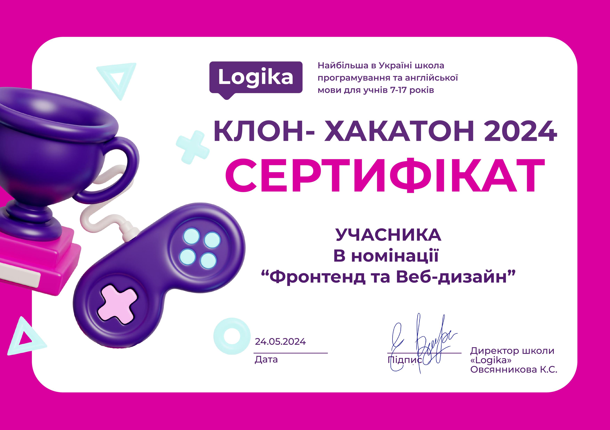

Мої навички
Маю рівень англійської мови B1 (Intermediate), що надає мені можливість впевнено виконувати переклад різних текстів, підтримувати розмови на різноманітні теми та створювати письмові роботи на визначені теми. Мій рівень англійської дозволяє мені розуміти і використовувати основні граматичні конструкції і словниковий запас, що забезпечує ефективну комунікацію як в усному, так і в письмовому вигляді. Я можу брати участь у бесідах, виражати свої думки, задавати питання та відповідати на них, а також писати зрозумілі і структуровані тексти. Мій рівень англійської допомагає мені впоратися з завданнями, які потребують середнього рівня мовної компетенції, таких як переклад простих документів або написання коротких статей на різні теми.
Я володію знаннями в HTML, CSS та JavaScript, що дозволяє мені впевнено виконувати завдання середньої складності в сфері веб-розробки. Я переважно дотримуюсь лаконічного та зрозумілого дизайну, намагаючись створювати інтуїтивно зрозумілі та доступні інтерфейси для користувачів. Однак, коли виникає потреба в більш нестандартних або складних рішеннях, я готова застосовувати креативний підхід і знаходити ефективні способи реалізації складних функціональних і візуальних вимог. Мій підхід до веб-розробки завжди орієнтований на досягнення балансу між функціональністю, естетикою та зручністю для користувача.
Освіта
Я навчаюся в Green Country School, де отримую рівень B1 володіння англійською мовою. Ця школа надала мені всі необхідні ресурси і підтримку для досягнення значного прогресу в англійській мові. Крім того, я завершила курси в Logika за напрямами Scratch та Web-Design. Під час цих курсів я отримала глибокі знання та навички у сфері програмування і дизайну веб-сайтів, які стали основою для моїх подальших досягнень у цих галузях. Наразі я активно займаюся освоєнням основ Frontend-розробки, що дозволяє мені розширити мої навички у створенні сучасних та функціональних веб-додатків. Мої попередні навчальні досягнення і досвід у Scratch та Web-Design допомагають мені в цьому процесі, забезпечуючи міцний фундамент для подальшого розвитку в області веб-розробки.


 Посилання на сертифікат
Посилання на сертифікат
Мої успіхи
Влітку 2024 року я взяла участь в всеукраїнському конкурсі програмування КЛОН-ХАКАТОН, де я здобула багато нових знань і досвіду у програмуванні, що допомогло мені вдосконалити свої навички та розширити професійний кругозір. Крім того, я зайняла 2-ге місце на всерайонній олімпіаді з англійської мови, набравши 37 з 40 можливих балів.
